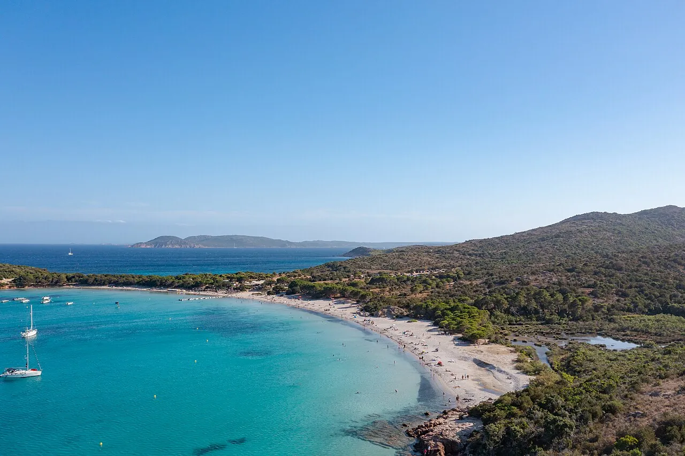

Rondinara
Corse-du-Sud, France · baignade, snorkeling, paddle, kayak

Baie presque fermée en forme de coquillage, entre Porto-Vecchio et Bonifacio. Eau peu profonde et turquoise, idéale pour la famille et le paddle.
- Lieu
- Corse-du-Sud, France
- Niveau
- Débutant
- Activités
- baignade, snorkeling, paddle, kayak
- Type d'eau
- Mer / océan
- Coordonnées
- 41.47, 9.27 (position approximative du secteur)
Dangers à connaître
- Mouillages nombreux en été.
- Très peu d’ombre sur la plage.
- Des vaches peuvent venir au bord de l’eau : laisse-les tranquilles et éloigne-toi.
Le conseil d'Ocean Buddy
Va explorer les rochers des deux pointes avec masque et tuba, tôt le matin avant l’arrivée des bateaux.
Ouvrir dans Ocean Buddy Télécharger sur l'App Store
Source : Fiche Ocean Buddy · septembre 2026 · à vérifier localement.